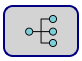
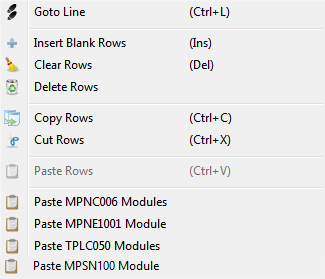

Foncionnalité Crosstable Editor
Goto Section: : permet de naviguer dans la Crosstable.
Retentive [1 - 192]: variables qui conservent leur valeur lorsque l'appareil est éteint;
Not Retentive [193 - 4999]: variables qui perdent leur valeur lorsque l'appareil est éteint;
Diagnostic [5000 - 5171]: variables de diagnostic. Ils sont utilisés pour communiquer avec un protocole autre que “PLC”. Pour plus d'informations, voir chapitre “Variables de diagnostic”
Node Status [5172 - 5299]: variables de nœud d'état. Ils sont utilisés pour communiquer avec un protocole autre que “PLC”.
Local I/O [5300 - 5389]: variables d'entrée et de sortie de l'appareil. Ces variables peuvent être renommées et modifiées (dans certaines parties) pour permettre plus de flexibilité dans l'écriture de l'application. Vous trouverez plus d'informations au chapitre “Variables de produit”;
System [5390 - 5472]: Variables système. Vous trouverez plus d'informations au chapitre “Variables de produit”.
 Vous permet d'étendre ou de comprimer les lignes vides de la Crosstable.
Vous permet d'étendre ou de comprimer les lignes vides de la Crosstable.
 Effectuer une recherche avancée pour une ou plusieurs variables dans le Crosstable.
Effectuer une recherche avancée pour une ou plusieurs variables dans le Crosstable.
 Permet de télécharger le fichier “Crosstable.csv” présent dans un autre projet. Le fichier importé écrase le fichier actuel au moment de l'enregistrement.
Permet de télécharger le fichier “Crosstable.csv” présent dans un autre projet. Le fichier importé écrase le fichier actuel au moment de l'enregistrement.
 Activer l'édition multiple de variables dans le Crosstable.
Activer l'édition multiple de variables dans le Crosstable.
 Permet d'annuler la dernière action effectuée et de revenir à la configuration précédente.
Permet d'annuler la dernière action effectuée et de revenir à la configuration précédente.
 Vous permet d'enregistrer les paramètres actuels. Si vous effectuez une modification, la bordure du bouton sera rouge, sinon elle sera verte.
Vous permet d'enregistrer les paramètres actuels. Si vous effectuez une modification, la bordure du bouton sera rouge, sinon elle sera verte.
 Vérifie l'exactitude de la Crosstable.
Vérifie l'exactitude de la Crosstable.
 Lance le programme de PLC. S'il n'y a pas d'erreur dans la Crosstable, vous pouvez ouvrir le logiciel PLC. Pour plus d'informations, voir chapitre “Ouvrir le logiciel PLC”.
Lance le programme de PLC. S'il n'y a pas d'erreur dans la Crosstable, vous pouvez ouvrir le logiciel PLC. Pour plus d'informations, voir chapitre “Ouvrir le logiciel PLC”.
 Activer toutes et seulement les variables de diagnostic des nœuds et des bus de champ existants (voir la section crosstable Diagnostic et Node Status).
En cliquant avec le bouton droit de la souris sur le tableau, vous pouvez effectuer certaines opérations :

Goto Line: sélectionne directement la ligne souhaitée.
Insert Blank Rows: Insère une ligne vide.
Clear Rows: Supprime le contenu de la ligne sélectionnée.
Delete Rows: Supprime une ou plusieurs lignes sélectionnées.
Copy Rows: copie une ou plusieurs lignes sélectionnées.
Cut Rows: coupe une ou plusieurs lignes sélectionnées.
Paste Rows: Coller une ou plusieurs lignes sélectionnées.
Paste MPNC006 Modules: Coller toutes les variables associées aux modèles distants MPNC005 et
MPNC006 et aux modules connectés (MPNC020 / MPNC030 / MPNC035).
Paste MPNE1001 Module: Coller toutes les variables associées aux modèles distants MPNE10.
Paste TPLC050 Modules: coller toutes les variables associées aux modèles distants (MPNC020 / MPNC030 / MPNC035).
Paste MPSN100 Module: colle toutes les variables associées aux capteurs de la famille MPSN100 (température, humidité...).
Variables d'ALARME / EVENEMENT:
Si nous voulons utiliser une variable comme alarme/événement, nous devons l'indiquer dans le champ “Behavior”
mais ce n'est possible que si:
Le champ “Priority” est différent de “0”;
Le champ “Update” est différent de “H”;
Le champ “Type” est égal à “BIT”;
Avec ces réglages, vous pouvez choisir la condition d'alarme/événement.

Les variables présentes dans le menu déroulant sont toutes celles présentes dans la Crosstable, y compris celles du système,
à l'exception des variables qui ont dans le champ “Update” la valeur “H” et celles qui ont dans le champ “Priority”
la valeur “0”.